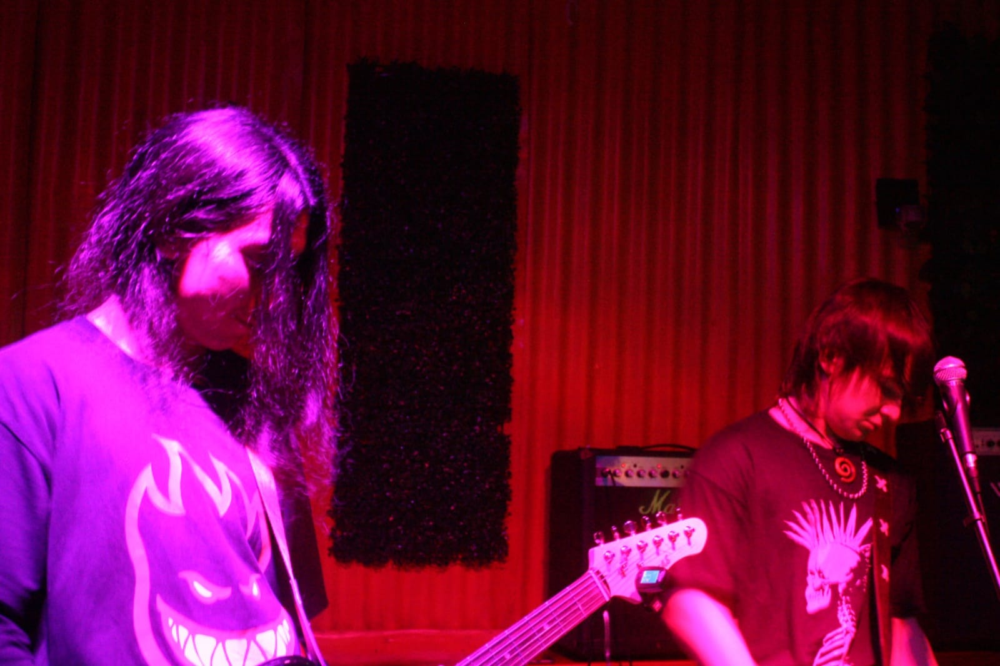

¿Qué mierda es Paciente Zero?
Paciente Zero es una banda de punk rock nacida en Cipolletti,
Río Negro. Surgimos con la idea de hacer música sin seguir reglas,
mezclando la velocidad, la energía y la actitud que siempre tuvo
el punk.
Nuestras canciones hablan de lo que vivimos todos los días:
la amistad, el descontrol, las noches interminables, los amores,
los errores, la bronca y las ganas de seguir adelante. No buscamos
sonar perfectos, buscamos transmitir algo real.
Arriba del escenario dejamos todo. Cada ensayo y cada recital son
una oportunidad para compartir nuestra música con la gente que
siente lo mismo que nosotros. Paciente Zero es ruido, diversión,
pasión y una forma de vivir el punk rock.
GALERIA
FOTOS DE BARILOCHE


FOTOS VARIAS


